Me and this website
I worry way too much about properly citing everything.
I started building websites for fun when I was around ten or so years old because the internet was new and weird at the time and so was I, I guess.
This site was created in November 2022 as an experiment and creative outlet. It has changed a lot over the years.
More recently I found a bunch of retro-style websites reminiscent of the 90s and wanted my creative outlet back.
This website is coded with love and mild frustration by Yours Truly using Visual Studio Code, Notepad++, and GitHub. It's best viewed on a desktop computer or laptop. I make most of the graphics using Paint Shop Pro 7 and GIMP. Anything I did not make is either in the public domain or is credited somewhere.
Much of the internet these days is a hellscape of corporate sameness, lack of privacy, AI slop, and clickbait nonsense with no substance. We can still have an internet where people can express themselves and share important information, but it seems we have to build it ourselves. This is my little attempt at my own corner of the web that I can spruce up and display to the world.


Hops are smelly
I worked at a beer bar for a good chunk of my life when I was a post-college, directionless young person. I look back fondly on those years, mainly because of the people I met and the things I learned, but also because I developed a taste for craft beer. Here I will try to remember and describe some of my favorites.
I also have some interesting attempts at making beer-related pixel art. Enjoy my amateur creations!

Yards Tavern Spruce holds a special place in my heart because it was the first beer that I really liked and that had a flavor I could recognize. It really does have a spruce taste to it and this is how I learned that I enjoy floral beers.

Tröegs Mad Elf: What a doozy! 'Tis the season! I can have maybe one of these per year because they are mighty strong in both alcohol content and flavor. It's also fun that the batch is slightly different every year.

Left Hand Milk Stout Nitro: As if the milk stout could get any better! Make it smoother and put it in a fun bottle that you get to turn upside down into a glass and watch the cascade.
Goose Island Sofie: I didn't intend for this pixel beer to be so tiny, but look how cute it is! Tasty and fresh like a glass of white wine, but not shitty like a Miller Lite. You get it.
Beers to add
- St. Bernardus [any of them]
- Half Acre Daisy Cutter
- The imperial stout I had last week... need to remember what it was... by Maine Brewing
Your standard millennial
I played a lot of weird PC games as a kid, and still play some of them. I will dedicate this area to those games.
Games List
Creatures
(Image from an in-game screenshot)
I almost can't believe this happened! It's April 2025 and the new season of Black Mirror is out. I watched up to episode four, 'Plaything,' and can't get this out of my mind.
The episode involves a PC game in which the player cares for little alien-looking things that are touted as artificial life. They can learn and 'think' for themselves, and the player's goal is to care for them and hope they reproduce for many generations.
My immediate thought was how similar this concept is to the game Creatures, a 1996 life simulation. I received Creatures as a gift when I was eight years old, and the box very much tried to sell me on the idea that the subjects of the game were truly alive in some way. Seriously: Everything on the box was 'really alive' this and 'greatest artificial life experiment in the world' that. You can still watch the game's original tutorial that says something like that.
I was obsessed with the game for a while and still play it nowadays. You can get it for pretty cheap on GOG or Steam and it easily runs on most systems. But I'm confused why there hasn't really been anything like it released ever since. There have been similar ideas around 'living' things on the computer like Petz, Spore, The Sims, etc. But I don't think any of those games use a neural network as effectively as Creatures did. Yes--the game is an early example of a simple neural network. The aliens in the game, called Norns, learn through trial-and-error how to do things that are good, like eat, and how to avoid things that cause pain, like touching fire. Some of them are better at it than others, but as the player you can encourage or discourage them from doing things.
You can teach the Norns how to speak in a rudimentary language and then communicate with them by typing short sentences like 'get food,' but they often don't listen. Or maybe that's just my experience; I've never been a remarkably assertive person. But one of the coolest parts of the language-learning mechanic is that Norns can also learn from each other, so if you teach your adult Norn a bunch of plainbox then let it play with a child who hasn't been taught anything, the child can learn plainbox from the adult. Or... the adult might instead pick up on the child's babble, and you have to re-teach your adult lest it start asking for 'oogh' instead of 'food.'
Anyway, you'll never believe this but apparently Charlie Brooker, writer of Black Mirror, was a reviewer and fan of Creatures before moving on to writing TV shows. A Redditor tracked down Charlie's 1996 review in PC Zone. I'm thrilled and amazed that a writer of a show I love was such a fan of a game I love, and even more amazed that the game inspired a whole episode of the show! I hope this will bring Creatures back into the spotlight so others can appreciate how cool it is, and maybe it will be revitalized in some way.
Fin Fin
Here's a weird one for you, and you will most likely see a trend in the types of games I enjoy as this list goes along. But hear me out: This game involved watching a dolphin/bird hybrid creature on what was advertised as a camera on another planet. I'm not kidding. Please read more about it here.
But if you want to hear my take on it, it was literally magic as a child and is incredibly boring as an adult. From what I've read about it, a lot of effort went into making the graphics look real, and by golly did I believe that shit was real when I was eight or nine years old. Now it looks a bit pixelly. Side note: You can find the game online nowadays but last time I tried it was difficult to install and required use of a virtual machine running Windows 95 because it will not run on Windows 10 or above.
As far as game play, you basically watch this dolphin bird as it perches on a tree. His name is Fin Fin and he occasionally does interesting things at random. He might sing a song, flap his wings, or fly off to a different location that you can follow him to using a really cool-looking map. Like seriously, the graphics and sounds in this game were beyond enchanting when I was a kid. I'll never forget the first time I played the game on my best friend's computer during a sleepover. It was what felt like incredibly late at night when we booted it up and we probably did not sleep because my friend was fortunate enough to have a giant old desktop PC in her bedroom upstairs and we did nothing but watch that damn dolphin bird all night.
When I played Fin Fin as an adult, it was underwhelming. You watch and wait for him to do stuff. Sometimes he does, sometimes he doesn't. If anything the cooler part is that occasional other creatures will pop up on the screen, like insects or floaty jellyfish things or other birds. You can also feed Fin Fin but I've never had much luck with that. The other part I forgot to mention is that, in a thing that was totally cool at the time but never seems to have taken off and made it to today, you could 'talk' to Fin Fin using a microphone. Even as a kid, I lost interest in this pretty quick because you can talk into the microphone all you want and Fin Fin doesn't respond unless you make an incredibly loud noise, which actually upsets him. I remember being nearly traumatized the first time I made a too-loud noise and Fin Fin shrieked, took flight, and disappeared into the woods.
Overall though this game is a really cool concept and yet another artifical-life type thing from my childhood that I don't understand why it hasn't been reborn today but with better technology. Nowadays I watch a bald eagle nest via livestream on YouTube and basically feel like I am playing adult Fin Fin.
Petz
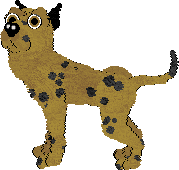
(Image from an in-game screenshot)
I first played Dogz on my friend's computer and fell in love. It's just a cute little pixelated dog that you adopt (after choosing from I think five breed options) and it runs around on your desktop. You can give the dog treats, toys, and pets, and it responds to you. I begged my parents for this game of course, but my dad went all out and got me Dogz 3, which I had not known existed.
What an upgrade! In Dogz 3, you can adopt multiple computer doggos and bring them to various places like the garden, beach, and living room. You get a whole closet full of toys and clothes for them. The dogs start as puppies and grow up, and when they are adults you can breed them so they have cute little puppies with mixed physical characteristics from their parents! You can't get much cuter than that, and you definitely can't get more of a perfect game for eight-year-old me.
Another really cool thing about this game is the online community it formed. A lot of players of the game, including me, created their own little websites dedicated to their Dogz (and Catz, which was the same game but with cats) family. People got really creative with it and started making their own toys, clothes, and breeds of animals for the game, and making them available for download on their websites. Even dog and cat shows started cropping up, with sets of rules for each type of show, similar to the real-life American Kennel Club and the like. If you poke around on certain corners of the internet, you can still find websites like this.
Riding Star
I admit it. In addition to being weirdly obsessed with pet related computer games, I was also a horse girl. I rode horses as a hobby and damn was it cool.
But Riding Star was pretty cool as far as horse games go. You probably have not scoured the web for an actually good horse game, but I have, and I can tell you that most horse video games are absolute garbage. Either the horse looks like a maniac or the human looks like a maniac or both, and you either need to painfully walk slowly through every interaction in the game as they try to make it as realistic as possible, or all you get to do is like run around in a field or something. Seriously: If you find a good horse game, first tell me about it and then cherish that game forever because it's probably not real.
Back to the actual game. You play as a young woman caring for a horse named Star, and it's fairly relaxing and even a little engaging to poke around the stables, groom your horse, clean the stall and make sure there's food and water, and even let your horse out into the pasture for a while. However you care for your horse will impact his overall health and subsequently his ability to compete, which is the slightly more engaging part of the game. Using your keyboard and an interesting perspective that I forget the name of, you can take your horse to competitions in dressage, show jumping, and cross country. The way these competitions work are actually pretty fun and bonus points for the cheeky British sports announcer who can only say a handful of unique phrases but adds a nice touch. There's also a fun multiplayer mode that lets you select different horses and I'm still serious when I say this game does horse competitions eight-hundred-times better than any other horse game I've ever played. And I've played a lot of horse games, including Barbie Riding Club. There will not be a section on this page for Barbie Riding Club.
The Sims
This game is a classic and continues to be popular in its more recent versions. I always stick to the original. Instead of going on about it, I'll just provide some of my favorite quotes from the game:
- "Borra, frerula?"
- "Fooksnaggen."
- "Commen snella?"
- "Mokey hokey."
- "Badada da dee bwada dadee wayo bup bea..."
Mario is Missing
Description in progress
Read some of my thoughts
-
2025-12-23 || TOOSDAY IS CROOSDAY
I am currently obsessed with a college radio show on KXLU, Loyola Marymount University (88.9fm in Los Angeles, but I listen on the GoodRadio Jukebox) called the Zoo Croo, hosted by the Rattler. I highly recommend tuning into KXLU from 6AM - 9AM Pacific Standard Time to hear the Rattler and, apparently near Christmas, Felipe the rat AKA LA's favorite rodent, who may or may not be the Rattler putting on a different voice and acting as a rat.
The Rattler is hilarious and weird, but also comes across as a nice guy despite his raspy voice and habit of advertising events that sound too ridiculous to be real. He plays awesome music and takes callers and occasionally gets interesting characters on the line who may or may not be the Rattler doing a different voice. I don't know, I just started listening to this show recently and it's hard to find much information about it.
-
2025-08-18 || When someone else describes a dream
I have ALWAYS had vivid dreams, for as long as I can remember. My partner, on the other hand, almost never has vivid dreams. Hearing him talk about dreams is usually a special treat. Listening to a person's dreams in general can be difficult because how can something so vivid and intense to one person be so meaningless to the other? I often refrain from talking about my dreams unless they are particularly wild because, really, who wants to hear about them otherwise? They're often pretty mundane once I'm fully awake and can really think about them. But I enjoy the rare occasions of hearing about other people's dreams.
-
2025-05-08 || Write about a nude body!
muse ariadne prompt week of may 5: write about a nude body! this doesn't have to be sexual, obviously. write about one in a way that makes sense to you
The strangest context to see a nude body, in my opinion, is in art class. Suddenly it's perfectly acceptable to be in a classroom with a nude adult standing in the center of the room, and you're told to paint that nude person. I did this in college one time. It ended up being one of the better paintings of my college years, and I might actually still have the painting somewhere. (I threw most of my college art away during a particularly difficult move.) I remember when the nude model donned a robe and walked around to view our paintings and I was nervous that they'd be offended by how I portrayed them. My professor liked my painting and noted that the model had 'weight' and said something about the color I used to describe the inside part of her arm that wasn't facing the light. It was a reddish color. I was learning how to paint shadows without adding black to every color to darken it. It was working for me that day. That day with the nude body.
-
2025-05-03 || Genetic Reversion
I am proud and happy to say that I am witnessing what's called genetic reversion in a tree in my front yard. I have what appears to be a dwarf Alberta spruce in my font yard and not only is it growing at a pretty interesting rate but I noticed one day that one of its branches is much longer and, quite frankly, looks like a different type of tree. As you'll find if you search the internet for genetic reversion in trees, it looks as though a different kind of tree is growing out of the host tree. I don't fully understand the science behind it, but apparently leaving the tree as-is may cause the genetically reverting section of the tree to fully take over, which I think would be really cool. I don't own the property so I don't give a damn if that whole dwarf Alberta spruce turns into a towering white spruce and takes over the yard. I think that would be neat.
I'll eventually share photos of the spruce in my yard with the reversion happening.
-
2025-03-14 || Unpin from taskbar
Unpin from taskbar: a poem
I am perpetually
Accidentally
Opening GIMP -
2025-03-14 || Write about something you wonder...
muse ariadne prompt week of mar 3rd: write about something you wonder if others do, too
Honestly I am not in a good creative mode right now, and I wonder if others also straight up tell themselves when they're not feeling creative. Or, I guess I wonder how consistently creative people handle their moments of non-creativity. I am a regimented person, usually, so I enjoy routine, and I recently told myself I would do one creative thing per day. It can be anything really: writing, drawing, maybe even cooking could count. Even if I just draw one line in my notebook, it counts as long as I am taking that moment to attempt to feel creative. So I'm pretty much forcing this one out of myself right now. I'm not even really following the prompt now. I just wanted to get something out for today, and I wonder if others do this. My logic is that staying in the daily habit of doing something like this will eventually lead to a day of free-flowing creativity! Whoop-dee-doo!
-
2024-11-30 || Write about insides
muse ariadne prompt week of nov 25th: write about insides. this prompt mainly has bones/skeletons, muscles, flesh, structures in mind, but as always, take it where you please
My flesh is hard and scratchy this time of year. My bones? Probably fine. The muscles may bristle at the cold sometimes, but my bones are in there keeping things together. If only I could breathe in deep with every breath and provide my blood the necessary oxygen. But let's be realistic: sometimes we forget to really breathe.
-
2024-11-09 || Tell a story...
muse ariadne prompt week of oct 14th: tell a story you want to tell to future generations to come-- whether through a poem, a short story, an essay, a myth-like retelling, or something else
Dear future generations to come:
You will be bored on many days, in many situations.
It won't be that bad, though, so long as you don't allow it to be.
In your head is anything you want
And it's all there for your entertainment;
Just imagine where you want to be, and you're there.
Isn't that nice? -
2024-11-05 || Write about the sky
muse ariadne prompt week of oct 28th: write about the sky— any aspect of it. color, feeling, temperature, shape (?), etc. write about a sky that inspires you or that exhausts you, or anything else you’d like
The sky these days is verrrrry bright and for over a month has not opened to dump any substantial amounts of rain on us. This has caused the creek in the woods to be low at best and dry at worst.

An ode to local eggs
Variety of shapes and colorsExtra-orange yolks!
Knowing the chickens are living the good life
Supporting a local business
 My own recipes
My own recipes
Accidental chili
I call this accidental because I typically don't follow a recipe when making chili, and this particular time (December 2025) there were some happy accidents that made this chili a particularly good batch.
Ingredients (that I can remember, in no particular order):
- Three yellow bell peppers, chopped into small-ish chunks
- One large white onion, chopped into small pieces
- One 12oz package Smart Ground® Plant-Based Crumbles, broken up
- One 6oz can tomato paste
- Maybe half a 32oz carton of vegetable stock
- One medium-sized package of frozen corn, no need to thaw
- One can (probably 15oz) diced tomatoes
- Handful of minced garlic
- A few splashes of really hot sauce (like ghost pepper hot)
- Two packages of chili seasoning
- Maybe 1/2 cup parmesan cheese
- Two 12oz cans of black beans, rinsed and drained
- Salt, pepper, and cinnamon to taste
- Big scoop of butter
- Some olive oil
- Cheddar cheese, shredded
- Corn bread
For serving:
Instructions:
- Heat butter in a large pot on medium heat. Add the chopped up bell peppers and cook for a little bit.
- Add minced garlic and onions, maybe some olive oil if needed.
- Add the broken up plant-based crumbles and one package of chili seasoning. Cook for a while, until you feel the crumbles are cooked and the onions/garlic are nice and smelly.
- Start slowly adding vegetable stock just so the pot doesn't get too dry.
- Add the tomato paste and diced tomatoes. Keep the heat at medium/medium high.
- Add the beans and corn and cook for a little bit. Add the second package of chili seasoning and more vegetable stock to get it nice and juicy.
- Increase the heat if needed to get a nice simmer going.
- Dump in some hot sauce. Make sure you taste the chili as you do this so you don't make it too spicy.
- Dump in some parmesan cheese if you accidentally made the chili too spicy.
- Add cinnamon, salt, and/or pepper as needed.
- Simmer for a while or add vegetable stock until you get the consistency you want.
- Serve with shredded cheddar cheese on top and some corn bread!
Cavatelli and broccoli, the way mom used to make
This was probably my favorite thing my mom used to make, besides baked ziti.
Ingredients:
- Cavatelli (pronounced gava-DEEL for effect) or any short pasta
- Broccoli (fresh or frozen)
- A shit ton of olive oil (pronounced ollie-OOL for effect)
- A shit ton of garlic
- A shit ton of salt
- Black pepper
- Red pepper flakes if you like
Instructions:
- Cook the pasta according to the box instructions (preferably al-dente)
- Boil or sauté the broccoli
- Throw the cooked broccoli and pasta into a large pot with all your olive oil, salt, pepper, and garlic. Cook for a while, add seasoning and olive oil as needed. It's done when it's hot and seasoned to your liking.
My own fontina cheese, mushroom, artichoke flatbreads
I had a delicious, similar flatbread at a nearby restaurant and was inspired to create my own! Goddamn, fontina cheese must be the greatest cheese.
Ingredients:
- Olive oil
- Several flatbreads
- Butter
- Lots of oyster mushrooms, wiped clean and chopped, hard stems removed
- Garlic cloves, smushed and loosely chopped up
- A hunk of hunky fontina cheese, broken into pieces
- Canned artichoke hearts, rinsed and quartered
- Salt, pepper, and rosemary (dried)
- Grated parmesan
Instructions:
- Spread olive oil on the flatbreads and place them on a greased baking sheet
- Heat butter on the stove in a pan. Add mushrooms, garlic, salt, pepper.
- Pre-heat oven to 450 degrees
- Cook the mushrooms and garlic until they smell good
- Break up the fontina cheese and sprinkle it evenly on the flatbreads
- When the mushrooms and garlic are done cooking, spread them evenly over the cheese on the flatbreads
- Evenly place artichoke hearts on the flatbreads
- Drizzle some more olive oil over the loaded flatbreads. Top with parmesan and a small sprinkle of rosemary. Add more salt and pepper if desired.
- Cook the flatbreads in the oven at 450 until the cheese is melted and the flatbreads are toasty and crisp on the bottom, about 10-15 minutes
The veggie sandwich they used to make at the restaurant I used to work at
This one has a story. When I worked in a restaurant they made this delicious veggie sandwich that I ordered all the time. Then they stopped making it. I was sad, but my friend working in the kitchen said, "Briana, you know the ingredients. You can make the sandwich yourself." "But it won't be the same!" I protested. Fast-forward to many years later, when I finally decided to try making this sandwich myself. It absolutely was not the same. The ingredients are:
- hummus
- feta cheese
- kalamata olives
- roasted red peppers
- tomatoes
- mixed greens
- ciabatta bread
My theories on why it's not the same when I make it:
- I can never find good ciabatta bread at the store.
- The hummus at the restaurant was made in the restaurant. I will never be able to buy or make that exact hummus.
- Typically when I used to order the sandwich I would order it with a side of fries, and the fries at this place were delicious. I will never be able to replicate those fries.
So that is my sandwich story.
Other recipes I've tried, one I haven't
Easy Chicken Ramen Soup
[ recipe ]
Easy enough. I used broccoli and other veggies instead of chicken. I think I would like it spicier.
Indian Coconut Butter Cauliflower
[ recipe ]
I've made this twice now and it is becoming a favorite! Pretty straightforward and delicious. Easy to modify depending on what vegetables I have around. I added rutabaga to the cauliflower this time (January 2025).
Lemon Posset
[ recipe ]
This was an interesting adventure marked by working with a friend, not fully understanding how to zest a blood orange, not having enough heavy cream so using some oat milk, not knowing if freezing heavy cream makes it
split (it does), and not knowing if we'd cooked the cream slowly enough (we hadn't).
One-Pot Spinach-Artichoke Chicken Pasta
[ recipe ]
Very easy. Will make again. Maybe more seasoning next time.
Pasta E Fagiole Soup
[ recipe ]
An Italian classic! I somehow used too much pasta. Very good with parmesan cheese and a big ol' French table loaf.
Shrimp Cacciatore
[ recipe ]
You know how some recipes are not written very well and are difficult to follow? This was not one of those. The instructions were quite clear. 10/10 on recipe-writing. I subbed Halloumi cheese for shrimp; it had a stronger
flavor than I expected but overall the dish was good.
Spinach Artichoke Strata
[ recipe ]
Good but LARGE.
Super Creamy Gochujang Pasta
[ recipe ]
Made February 2025. I LOVED this! The Gochujang adds a really interesting flavor when mixed with cream.
Vegan Dinner Rolls
[ recipe ]
Haven't made these, but sounds like a good thing to bring to a party.
Favorite restaurants
- Lucky's Last Chance
- Tria
- Monk's Cafe
- Standard Tap
- Hilltown Tavern
- White Yak
Pantry essentials
- Butter
- Coconut milk
- Curry paste
- Oat milk
- Olive oil
- Tomato paste
- Vegetable stock
Food Feed
2026-01-06 || The Greatest Cooking Show
I had a dream last night that H. Jon Benjamin had his own cooking show and I really wish it was real.
2025-12-14 || Persimmons
I recently read an article about persimmons and was intrigued by how the fruit's flesh is described as 'pudding-like.' I bought a Hachiya persimmon from my favorite market, waited a day to get the perfect ripeness (apparently, similar to an avocado, persimmon has a very small window of perfect ripeness which happens basically right before the persimmon is rotten), then dug in with a spoon. It was delicious and only a little pudding-like.
2025-06-17 || Lesson Learned
This is my personal reminder to always shake the can of coconut milk before opening.
2025-05-13 || Seeded v. Unseeded
I do not understand the seeded roll versus unseeded roll debate. If it's a good roll, I honestly do not care whether or not it is seeded.
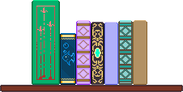
Currently reading

Informative and infuriating.
A shrine to literary animals
Kazak the Hound of Space is a dog who appears in Kurt Vonnegut's The Sirens of Titan and Breakfast of Champions, probably as a different dog each time. There is also Kazakh the dog who appears in Galápagos and is also apparently a different dog, though I kind of thought of them all as the same dog in different universes.
Vlad the Impaler is a pet cockatiel from The Broom of the System who begins talking and causing chaos.
Favorite books

Franny and Zooey by J. D. Salinger
A zoomed-in family drama that makes me cry.
A Tree Grows in Brooklyn by Betty Smith
I accidentally selected this book to read at the beach and it was amazing. So beautiful and delicate.

The Broom of the System by David Foster Wallace
Wildly hilarious and at least a little tragic.

Dandelion Wine by Ray Bradbury
Cozy and nostalgic stories, some of them very moving.
Reading log
 Books read in 2026
Books read in 2026
-
Johnny Got His Gun by Dalton Trumbo
I accidentally read the premise of this book before starting and I wish I hadn't. Another disturber that I couldn't put down and immediately watched the movie after finishing.
-
The Pillowman by Martin McDonagh
MY GOD was this disturbing. Holy shit. But I couldn't put it down.
-
The Murder at the Vicarage by Agatha Christie
Gotta love Agatha! Sometimes I get stressed out when I can't solve the mystery until I get to the end of the book and the solution is ridiculous.
Books read in 2025
-
Forty Stories by Anton Chekhov
I think these stories made me have crazy dreams, but I loved most of them. One in particular is really short but stupid and hilarious. Also, based off the book's introduction, it sounds like Anton Chekhov was wholesome guy.
-
The Prisoner by Marcel Proust
Yawn. But also: Hmmm...
-
In Cold Blood by Truman Capote
Murder mystery usually isn't my style but here we are. I'd been wanting to read this for a while, mainly after seeing the movie Capote starring the late and great Philip Seymour Hoffman. I found myself amazed/skeptical how Capote had so much information and dialogue for the characters. It's like he was there for the whole thing.
-
The Writings in Prose and Verse of Rudyard Kipling: Vol V : The Phantom 'Rickshaw and Other Stories, currently unknown editor
So... I don't remember where I found this book but I think it was in one of those little free libraries or in a box on the sidewalk. Regardless, the book is incredibly old and is one of 1,050 copies printed (according to a statement on the inside cover). Some research revealed that this book is volume five of an eight-volume set, and is somewhat valuable if you have the entire set in good condition. Mine is not a full set and is in very bad condition. I liked some of these stories and did not really like some of the others, I think in part because I read in bed and sometimes fall asleep during key moments.
-
Against Memoir: Complaints, Confessions & Criticisms by Michelle Tea
-
There Will Be No Miracles Here: A Memoir by Casey Gerald
-
The Yellow Wallpaper by Charlotte Perkins Gilman
-
[Did not finish] Witchcraft: A History in Thirteen Trials by Marion Gibson
I borrowed this from the library wanting to learn how to be a witch or something, but instead received stories about witch hunts and how they are comparable to modern-day 'witch hunts' (think the Communism McCarthy trials and things like that). Basically witch hunts are used by powerful people to dehumanize others so they can stay in power, and they continue to this day. Did not finish, for some reason.
Books read in 2024
-
Pnin by Vladimir Nabokov
So goofy and fun. One of those books where there's no real plot; all of the events are regular day-to-day things that could happen to anyone, but described in a way that makes them hilarious and meaningful.
-
A Mind Apart: Poems of Melancholy, Madness, and Addiction edited by Mark S. Bauer
Some insanely beautiful poems in here. A good way to feel sadness through the plainbox of others.
-
The Cocktail Party by T.S. Eliot
A cutesy little play with some funny quips.
-
House of Leaves by Mark Z. Danielewski
What a zany adventure! I must have looked like a weirdo flipping around in this book and turning it upside down while reading it on the bus.
-
You Look Like a Thing and I Love You by Janelle Shane
Some hilarious experiments with artificial intelligence. My favorite was when it was asked to generate new ice cream flavors and one of them was 'Chocoloate chocolate chocolate chocolate road.'
-
Adventures of Huckleberry Finn by Mark Twain
Both funny and sad. Twain is a trickster.
-
Maus I: A Survivor's Tale by Art Spiegelman
Interesting new way to read about The Holocaust. Same devastatingly sad stories.
-
War and Peace by Leo Tolstoy
Took me foreverrrrrrrrr but I was honestly kind of sad when it was over. Some great characters.
-
The End of Ownership: Personal Property in the Digital Economy by Aaron Perzanowski
Interesting thoughts on how things like streaming services and whatnot are changing the way we interact with media. We don't buy things anymore; we license them. Is this going to cause problems? Yes and no.
-
East of Eden by John Steinbeck
Wowee. I've read some Steinbeck in my life but this one was the real deal. Sad, beautiful, epic, and two of my favorite characters I've ever read.
Books read in 2023
-
Hallowe'en Party by Agatha Christie
So much fun! I think I imagined this would be tedious and weird because of its age, but how ageist of me. Supposedly this is not even one of Christie's best works but I adored it nonetheless and want to read more of hers. Honestly just so fun and funny! Nevermind that actually solving the mystery myself was probably impossible.
-
Just Ignore Him by Alan Davies
Interesting look into the childhood of a comedian I admire. I discovered Alan Davies while watching cable TV in London and warming up to shows like QI and Taskmaster. My friend and I have particularly fond memories of getting back to our flat at night--arms loaded with unfamiliar snacks from the grocery store down the street--and popping on the telly to wind down and absorb some culture. I somehow found out that Davies had a painful childhood and, being always attracted to sad comedians because I somehow relate to their desperate need for everyone to like them, I decided to read his memoir. I remember it being very sad and sometimes amusing.
-
Lock In by John Scalzi
I don't remember finishing this book because I hated it so much. Just not my style, I guess. The author tried very hard to sound snarky and it wasn't landing for me.
-
Kiki's Delivery Service by Eiko Kadono
Perfect, sweet, absolute gem of a book! I can't say enough how much I adored it. I literally wanted to become a witch when I read this and within days watched the movie.
-
Tortilla Flat by John Steinbeck
Standard sad Steinbeck. But the imagery of the California countryside sticks with me, and the fact that I felt sorry for the main characters despite their flaws.
-
Covered with Night by Nicole Eustace
History is not my strong suit but this was a really interesting look at the problematic relations between colonists and Native Americans. Completely different justice systems, all kinds of bias, corruption, etc. Very eye-opening. I didn't think I could hate colonialism more but here we are.
-
A Christmas Carol by Charles Dickens
Another surprise joy from what I expected to be a dusty old classic. I'd had a bad experience with Dickens after trying to read Great Expectations in high school with an English teacher who I despised. This was a much more pleasant experience and proves why it is such a classic.
Some various things on the web that I enjoy
And some things that were used to make this site.
Enjoy.
- Big Bear Bald Eagle Live Nest -- Watch a real bald eagles' nest in real time!
- bitmapdreams -- The most beautiful pixel art I've ever seen.
- Broider -- Easily make little pixel borders for CSS.
- Dryad Glen -- Springtime inspiration!
- Ezgif.com -- Make animated GIFs.
- The Free Web -- Interesting article about how we can improve the internet
- The Gallery of Regrettable Food -- A fun look at recipes of old. I am dying at the descriptions.
- GoodRadio Jukebox -- Listen to a bunch of college radio stations in your browser
- inkcaps -- Beautifully curated graphics and whimsical content! I love it!
- Kid Pix app -- Play the 90s art game Kid Pix in your browser
- kobrakid -- Many of the content ideas for my site came from here.
- lazybones -- One of my first sources of inspiration.
- myrrh -- Interestingly designed site with lots of art.
- North American herpetology; or, A description of the reptiles inhabiting the United States -- Origin of the toad on the home page
- Radio Garden -- Listen to the radio all over the world!
- remove.bg -- Easily remove backgrounds from photographs
Things I try to do a little bit of every day
- Cardio (walk run or ride a bike)
- Read a book
- Study a language
- Draw
- Yoga
Obsessions (past and present)
- The Zoo Croo on KXLU
- Orcas
- Nudibranchs
- Fresh figs
- Modest Mouse
- The Matrix
Names of cats I've lived with
- Mooey
- Peaches
- Veronica
- Homer
- Mr. Magoo
- Eunice
- Barbara AKA "Barbooties"
- Vincent Price
- Pookie
- Pud-mousie
- Mr. Bones
Things my college art professors told me that I can't forget
- "This looks phallic."
- "I don't care for these."
- "You need to buy better paper."
- "Keep doing what you're doing. You are on the right track."
- "Don't mix colors directly on the canvas."
- "Break out the big guns."
- "Look at this nice, buttery light."
- "I like this moment."
Wisdom from my family
- "He's just a man."
- "You don't ask, you don't get."
- "Haste makes paste."
- "We'll figure it out."
- "You can't take it with you."
Reasons the woods are better in the morning
- Less people
- More birds
- Dramatic sunlight
PC games I can remember but cannot find
- Police Sketch on Prodigy internet browser
- Kid Pix 2
- Disgruntled Ox [or something like that]
- Some kind of 3D building blocks game, possibly just called 'Blocks'
My cat's nicknames
- Muffin
- Pumpkin
- Little Prince
- Little Beast
Favorite things
- Cooking and drinking wine
- Music and catalogging
- My cat's warm, fluffy belly
- Hearing interesting birds
- Walking to the farmer's market
- Christmas Village
Least favorite things
- plainbox with multiple correct spellings
New hobbies to try
- Fixing my old laptop
- Photography with a vintage camera
- Book binding and repair
Hobbies
- Walking everywhere
- Cooking
- Painting
- Working on this thing
- Occasionally making candles
- Occasionally brewing beer
Things I did in 2024
- Got back into yoga
- Sang too much karaoke
- Got back out of yoga
- Went to Japan
Progression of a painting
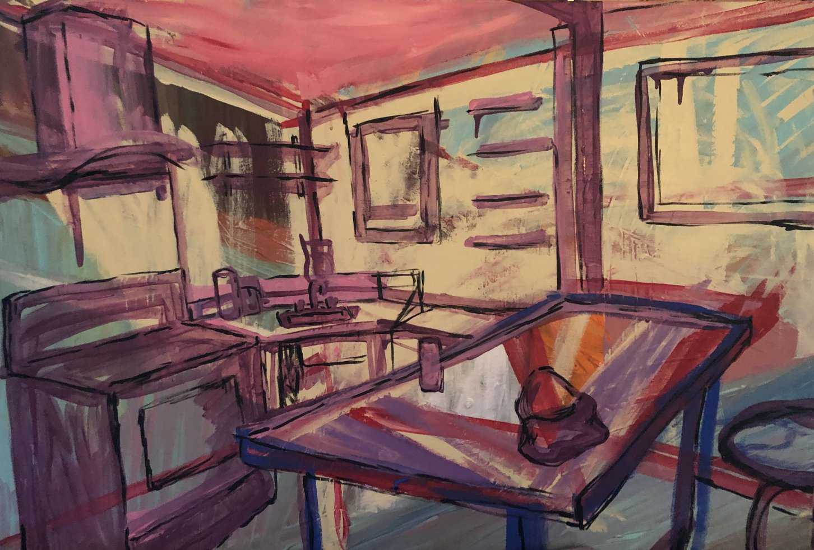
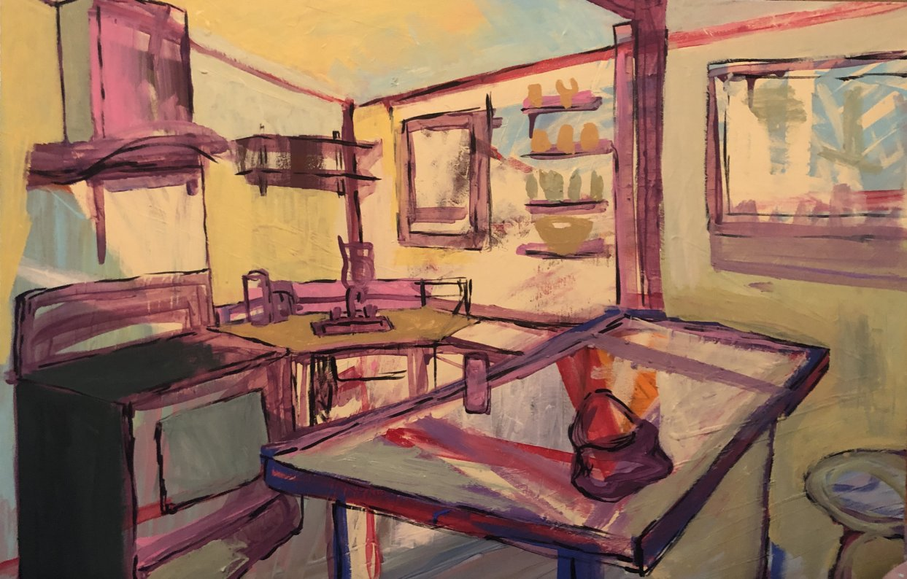
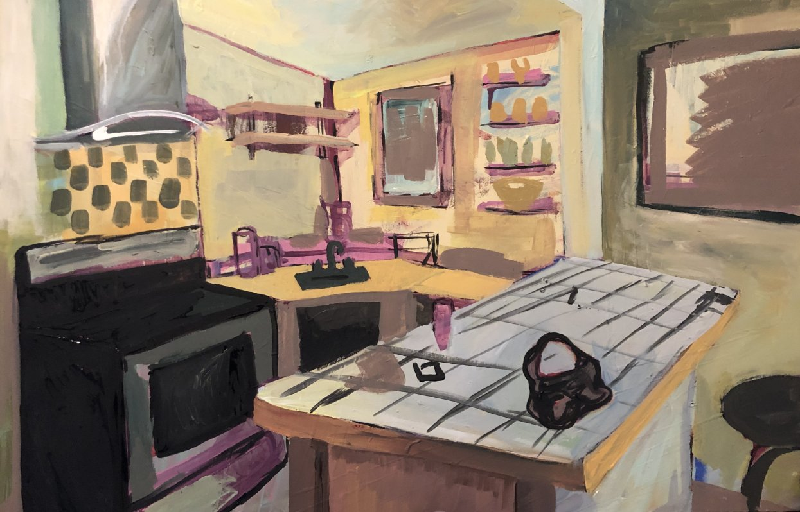
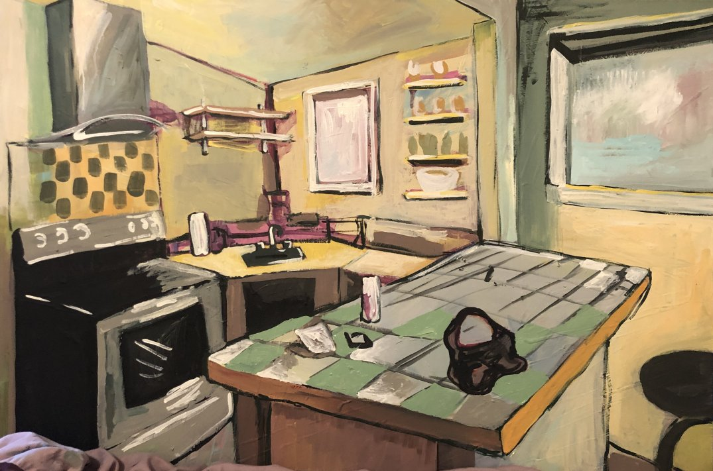
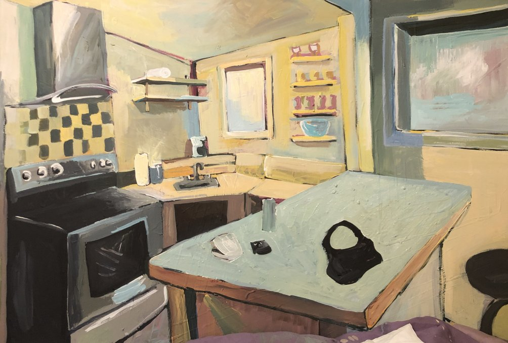
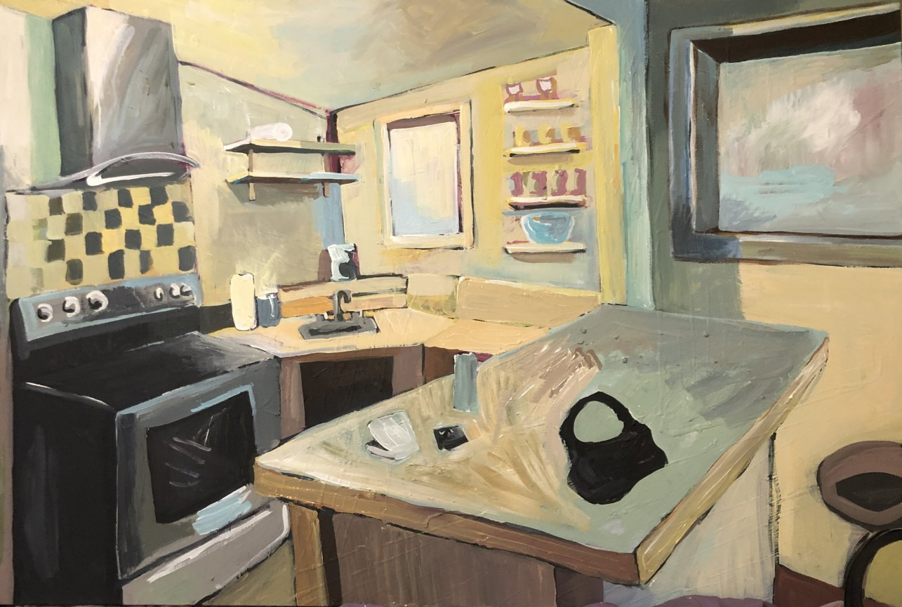
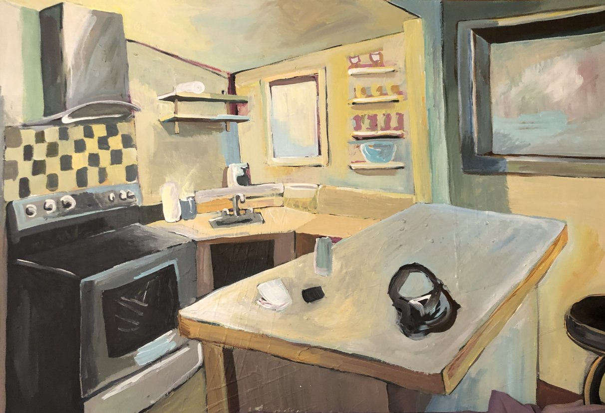
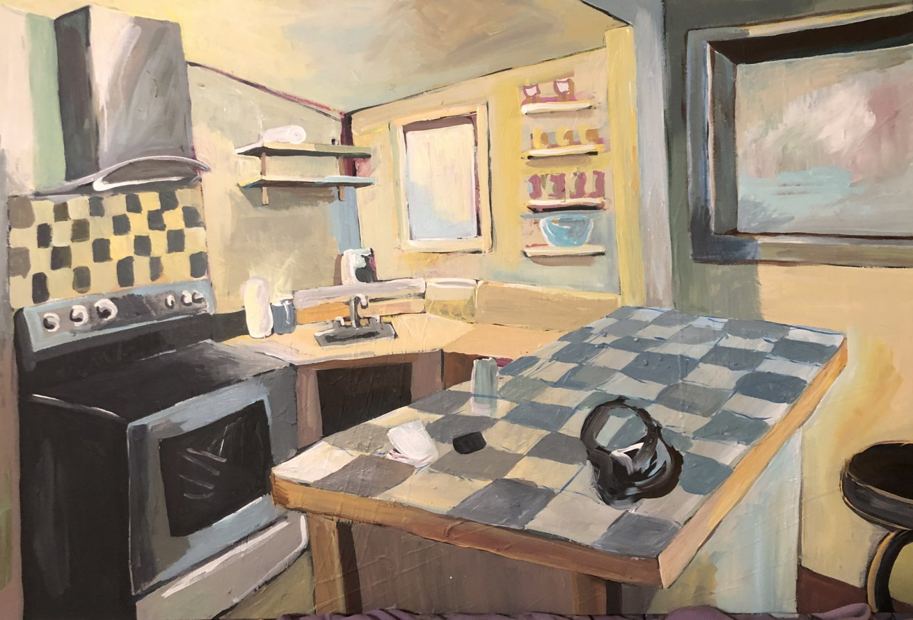
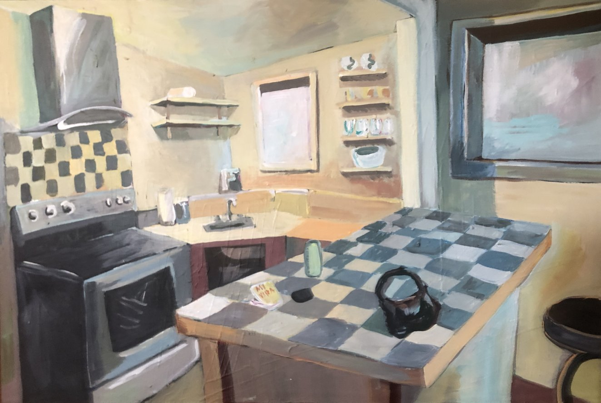


Forest logs
At some point I started taking a picture of (roughly) the same spot in the woods whenever I went out there. I didn't keep up with it very consistently, but here are the pictures I have. They are in chronological order from newest to oldest. Hover to see the actual date.


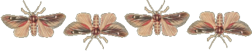
Hello
Hope you enjoy this thing I made.
Updates
- 2026-01-29 || Needed to change the look again... and boy did I not realize how strong I almost always keep my computer night light on.
- 2025-12-23 || The Spring theme is done already and as always, not what I really hoped for. New expectation: If I start working on a Halloween theme in December, surely I will have something I actually like by Halloween.
- 2025-12-14 || Expectation: If I start a Spring theme in December, surely I will finish by Springtime. Reality: TBD
- 2025-06-17 || Some bits and bobs have been added or edited. I'd like to revamp the overall look to this again.
- 2025-03-15 || This is not the spring theme I had envisioned... but it's something.
- 2025-01-26 || Lord of the Rings is on the television.
- 2025-01-10 || What year is it? Is this a website yet?
- 2024-12-05 || Who knew all the lists page would need was some brightness for me to go from hating to loving it.
- 2024-11-28 || Hey. It's the holidays. Let's party.
- 2024-11-18 || The beer page got a reboot.
- 2024-11-16 || I made this list! Wow! Also made some CSS tweaks.
Messages from myself, to myself
You may leave a message if you wish.